2003年
某オフィシャ○さんが全く更新止まったままなので、いまいち確定な情報はありませんが。現時点では「class」としての活動は、ミニアルバムリリースまでストップの模様です。
ここで少々話の出ているミニアルバム（？)の情報をここでまとめておきたいと思います。まず、ミニアルバムとは･･･!! すいません。何分以下収録でミニアルバムと定義しているのか忘れました(爆）classの1st album「Mellow Prism」、これはミニアルバムとなりますので今回リリースされるアルバムも収録曲は恐らく5曲～7曲程度のものになると思います。
【収録候補曲】
・夏の日の1993～2003 up to date session～
・夏の日の・・・
・いつでもふたり（収録確定）
・あの日の時計台（収録確定）
現在では、残念ながら、ここまでしかわかっていません。某外資系レコードショップのリリース情報はもう12月末まで出ていますが･･･classのお2人が「アルバムでます！」と名言している以上、リリースはされると思いますが
オフィシャ○サイトではこの事は一切発表になっていません･･･ので、楽しみに待ちましょう♪
ね～～イベント出演予定もうないの～～？
っつーことで、classメディア出演情報だけお伝えします。
【テレビ（東京MXテレビ）】
9月9日（火）26：05～27：00→「Live Depot」出演VTR
「Live Depot｣サイトでは既にストリーミング配信されています。
楽屋裏写真を含めたレポもアップされていますよ（日浦さんの字が間違ってるけどね…）
【ラジオ（BAY FM）】
9月12日(金）→「路上魂」
★「路上魂」サイトにて、class出演部分の「名曲魂」のレポが次回アップされる模様…。
時間帯など不確実なもので、申し訳ありません。
私の記憶が確かならば～～、class初のインストアイベントになるのではないでしょうか？
8月24日にインストアライブとCD即売会が開催されます。某新星堂には、だいぶん前から告知ボードが出ていたらしいのですが…。
■8月24日(日）■入場フリー
■17時30分スタート
■アコースティックライブ
■川崎アゼリア・地下街広場特設ステージ
★CD即売会にてCD購入した人には、classと握手できるようです
こんなギリギリに言われても・・・ ｡゜（ﾟ´Д｀ﾟ）ﾉ
今年の冷夏は、やっぱり・・・ま、まさかね…。関西は暑いんで、推測にしか過ぎませんよ(笑)
1000アーティストのデーターベースと情報が満載の「J-POP 追いかけネット」にclassのページが誕生しました。
（意外に）情報が早かったり、試聴やオフィシャルの更新情報が載ります。「ファンの追いかけ」には、みんなでclass情報を書き込むのだーー!!!
アクセスランキングでclassを上位にのし上げるぞ！
■開場/17時 開演/18時
■浜松町 CLUB JUNK BOX TOKYO BAY
■出演：本名カズト/Lamp/玄米他
ゲスト：class詳しくはよくわかりませんが、今はとにかく土曜日バンザイ！
今日で7月も終わりです。「夏の日の1993」がリリースされた1993年と同様に今年は涼しい夏に。再結成したclassはそんな涼しい夏とやはり縁があるのかないのか。由比ガ浜の夏を彩るイベント出演しますぞ～～！！！
まずはFM横浜のラジオ「SHONAN KING”COPPERTONE”CATCH OF SUMMER」に25分程、生出演します。その番組終了後は、ドドーンとスペシャルライブを開催!!
■8月8日(金曜日）■12：30～12：55(生放送）
■鎌倉市由比ガ浜海水浴場・YUIGAHAMA BEACH STATION
ってか、いい加減に平日開催やめてくれよヽ(｀Д´)ﾉ （といってこのイベント月～金開催だなっと）土日じゃないと遠征できない・・・
こまごまとした情報と補足が出ているのでまとめてお送りします。
- 「夏の日の1993～2003 up to date session～」のオリコン順位でてました。雑誌では確認できないので、ここ参考にして下さい。
- 今回のアレンジャーの富田素弘氏。私は全く存じ上げない方だったんですが、有名な方だったんですね。
- 最新情報ではありませんが･･･。Amazon co.jpの「夏の日の1993～2003 up to date session～」のカスタマーレビューがとてもよかったです。みなさんも是非読んでください。
■19：30開場／20：00～20：55(生放送）
■TOKYO FM 2F/TOKYO FMホール
17日付のスポニチとデイリーに記事が掲載されていたようです。誰か確認した人いますか？
８年ぶり｢ｃｌａｓｓ会｣<引用：スポニチ>９日にカバー曲「夏の日の1993～2003 ｕｐ ｔｏ ｄａｔｅ ｓｅｓｓｉｏｎ」を発売して約７年ぶりに再結成した男性デュオ「ｃｌａｓｓ（クラス）」が16日、都内で８年ぶりのファンイベント「ｃｌａｓｓ会」を行った。
96年３月に解散した時のファンクラブ「クラスメイト」のメンバーから200人を招待。
津久井克行（43）と日浦孝則（43）は絶妙なハーモニーで「夏の日の…」や「永遠の素顔」など４曲を歌い「同窓会みたいで楽しかった。これからも息長く消えずにいます」と感激。
新曲はこの日付の有線チャート10位。今秋にミニアルバムを発売予定。 再結成ｃｌａｓｓ“同窓会”に笑顔<引用：デイリースポーツ>
９３年にリリースしたシングル「夏の日の１９９３」を大ヒットさせ、その後、解散した男性デュオ、ｃｌａｓｓが１６日、東京・青山ＣＡＹで再結成ライブを行った。
デビューから１０年という節目を迎え、再出発した津久井克行（４３）、日浦孝則（４３）の２人は「１０年たって同窓会のようなものができればと思った」とファンとの再会に笑顔。
９日に発売した新ヴァージョンの「夏の―」など４曲を披露し、久々の“ｃｌａｓｓ会”は大盛況だった。
もうひとつ少し古いですが情報。詳しくはよくわかりませんが、プランテックの東京ウィークリーオンエアチャート（7月4日～7月10日）で「夏の日の1993～2003 up to date session～」が5位にランクイン!! なんかすごいな～。
16日開催のclass会終了後のスタッフさんの報告より
「夏の日の1993～2003 up to date session～」今週（7～13日）ウィークリーは登場なしでしたが、16日のディリー速報ではなんと51位にランクされているそうです。
そして有線チャートでは10位（ソース元不明）。すごい～～～!!!
そしてそして、なんとミニアルバムが秋頃にリリースされるという発表もありました。新曲（新録）あり！
公式サイト（http://columbia.jp/~class/にて、classのオフィシャル掲示板が開設されました!!
日浦さんファン、津久井さんファン分け隔てなく交流する場になるでしょう。他にもちょっと気になってた部分もちゃんと修正されてたし、よかったよかった。
それでは早速、レッツゴー!!!
唯一、特典がつく山野楽器が地元にないんで、特典がつかない応援ショップでなにがあるのか知りたくて、応援ショップに名前があがっている大阪の某タワレコ（某の意味ないな）で購入してみました。
「ク」のところに在庫5枚（旧作と同じ扱いかよ！）
- とりあえず1枚をレジに･･･
- 店員：1,050円になりまーす♪
- 私：（1,050円支払う）
- 店員：こちらが商品とレシートになります。有難うございました～♪
- 私：・・・・・・
結局、なにもありませんでした(笑)
祝★7月9日付のスポーツニッポン（他にYahoo!J-POPニュース・LYCOS）に掲載されたようです。ネット上では写真ありませんが、新聞の方には写真があった？？？（未確認）←買えなかったんだよ～･･･
「class「夏の定番」で再結成」 ｃｌａｓｓ ７年ぶりに再結成<引用：スポーツニッポン/ライコス>名曲「夏の日の1993」で有名な男性デュオ「ｃｌａｓｓ」が７年ぶりに再結成される。
９日にセルフカバー曲「夏の日の1993～2003 ｕｐ ｔｏ ｄａｔｅ ｓｅｓｓｉｏｎ～」を発売するもの。
ｃｌａｓｓは津久井克行（43）と日浦孝則（43）のデュオ。93年４月21日にリリースしたデビュー曲「夏の日の1993」が夏の定番ソングとなり、１１５万枚（オリコン調べ）の大ヒット。
それ以降７枚のシングルと６枚のアルバムを出すが、96年３月末に音楽性の違いで突如解散した。津久井はその後３人組「ｔ２ｋ」を結成、日浦も横浜ベイスターズの応援歌「勝利の輝き」を歌って活躍。
デビューから10年の今年、当時のプロデューサー尼崎勝士氏（53）が再び引き合わせた。
津久井と日浦は「突然解散というわがままを許してくれたファンに対し感謝の気持ちを込め、もう一度ふたりで歌うことで、あの時はありがとうと、今、伝えたい」と抱負。
16日に約８年ぶりのファンイベント「ｃｌａｓｓ会」を開く。 class「あの時はありがとう」7年ぶりに再結成<引用：スポニチ大阪>
名曲「夏の日の１９９３」で知られる男性デュオ「ｃｌａｓｓ」が７年ぶりに再結成。きょう９日にセルフカバー曲「夏の日の１９９３～２００３ ｕｐ ｔｏ ｄａｔｅ ｓｅｓｓｉｏｎ～」を発売する。
ｃｌａｓｓは津久井克行（４３）と日浦孝則（４３）。９３年４月２１日にリリースしたデビュー曲「夏の日の１９９３」が１１５万枚（オリコン調べ）の大ヒット。
それ以降、シングル７枚、アルバム６枚を出したが、９６年３月末に突如解散した。
津久井はその後３人組「ｔ２ｋ」を結成、日浦も横浜ベイスターズの応援歌「勝利の輝き」を歌って活躍。
デビューから１０年の今年、当時のプロデューサー尼崎勝士氏（５３）が再び引き合わせた。２人はわだかまりも消え「夏の―」をアコースティック風に収録した。
津久井と日浦は「突然解散というわがままを許してくれたファンに対し感謝の気持ちを込め、あの時はありがとうと、伝えたい」と抱負を話している。
ほ～。当時のプロデューサーの名前って実は初めて知った…。
公式サイト(http://columbia.jp/~class/) インフォメーションより。
山野楽器で「夏の日の1993～2003 up to date session～」を購入すると先着でプロモーションビデオがもらえるそうです。
購入特典は店頭購入分のみで、ネット通販については特典対象に入らないようです。
その他にも全国各地のCDショップが「夏の日の1993～2003 up to date session～」の応援ショップとなっておりますが、応援ショップの意義については現在、調査中です･･･。
どこまでも関東人に優しく、関西人に厳しい今回の再結成･･･(遠い目)
公式サイト(http://columbia.jp/~class/)開設に伴い、情報が一気に出たので簡単にまとめます。
★ タイアップがつくらしい ★
「夏の日の1993～2003 up to date session～」にTV番組タイアップが付くことが判明。
テレビ朝日「サタデー総合研究所」エンディングテーマです。
いつから放送されるのか分かりませんが、エンディングではプロモがON AIR。
っていうか、また関東地方だけかよ！誰かレポして～(>_
★ class会について ★
都内某レストランの場所が判明。
場所は表参道の「Restaurant CAY（レストラン カイ)」←タイ料理のお店。
「東京グルメ」というサイトに地図が載っていますので、出席される皆様ご参考下さい。
検索方法：「東京グルメ」→検索に「Restaurant CAY」→該当ページ。
7/5現在、当落通知はハガキ応募組、Web応募組の誰にも来ていない模様。
↓↓今さっき見つけてきました。ビビった～↓↓
http://columbia.jp/~class/
※リンクには許可がいるみたいなので、テキストのみ。
インフォメーションによるとタイアップ付きで番組では、PVが流れる模様。他にもラジオ出演の情報も出ています。テレビもラジオも全部、関東だけなんですが･･･ﾟ･(ﾉД`)･ﾟ･
待ちに待った7月に突入!!
3ヶ月にわたり「夏の日の1993～2003 up to date session～」についての情報をお送りしてきました。この辺りで今までの情報を簡単に振り返ります。
- 発売日は2003年7月9日
- ジャケットにはこれ
- カップリング「夏の日の･･･」は7年ぶりの新曲になる。
- 「夏の日の･･･」の作詞作曲は1993と同じ面々。
- 3曲目は カラオケではない模様⇒カラオケでした
- CD発売記念イベントが7月16日に開催。
- 7月1日現在でラジオ各局・有線で結構かかっている。
- アレンジャーは冨田素弘氏。R&B調のアレンジになったけど、出来はいい感じ。
- 原曲に比べ30秒短い4分ジャスト。
- ジャンルは【ニューミュージック（フォークを含む）】
- 大阪の某大手電気店(ヨドバ○）は入荷枚数1枚(笑)
以上です。
当サイトBBS＋雑誌「CD HITS！」からの情報
（情報提供：メルシーさん thanks♪）
「夏の日の1993～2003 up to date session～」はジャスト4分の曲になるそうです。
オリジナル（シングル）バージョンは4分31秒。アルバム（サビから始まる）バージョンは4分51秒。
30秒も短くなるのか･･･。う～ん･･･((+_+)))
それと既に皆様周知の事実ですが、カップリング「夏の日の･･･」について。これはclassにとっては7年ぶりの「新曲」になります。こちらの収録時間は4分31秒になるそうです。
バラードなのかアップテンポなのか現時点で詳細は全く不明ですが、それだけにすごく楽しみ♪
いよいよリリース半月前!!!
各地でO.Aがはじまり、全国各地から「1993」聞いたよ～有線で流れていたの聞いたで～とかの声を聞きます。
FM FUJIでは「夏の日の1993～2003 up to date session～」が今月（6/15～7/15）のホットショットエアプレイに選出されています。
発売日まで待てないぞー!!という方、是非お近くのラジオ各局にリクエストをどうぞ♪
私も昔、よく聞いていた（大阪ローカルですが）ABCミュージックパラダイスへリクエストしました^^;
日浦さんの公式サイト「paper island」と津久井さん公式ファンサイト「餃子倶楽部」でCD発売記念イベント「class会」開催のお知らせが発表されております。簡単に詳細を述べると・・・
・完全招待制（応募は1名でも同伴者1名付きでも可）・場所は都内の某レストラン
・立食パーティ形式
・歌もあるらしい
・7月16日(水)の14：00～
※詳細は上記両氏のサイトをご覧下さい。
この日程･･･。
遠隔地のファンは...辛い…
思いっきり平日やし。さてどうしようかな。せめて木曜か金曜なら迷わずなところなんだけど･･･。
amazon.co.jpの「夏の日の1993～2003 up to date session～」のところを見ると、3曲目がこれまで「夏の日の1993～2003 up to date session～(カラオケ)」と発表されていたのですが、今日確認したところ、「夏の日の1993～2003 up to date session～(TV MIX)」となっています。
これは一体なんなんでしょうか？バージョン違いか？
日曜の夜7：00～テレビ朝日系列で「決定！これが日本のベスト」という番組が放送されています。爆笑問題が司会をつとめているあの番組です。
現在アンケート投票のテーマに「夏の名曲」という項目があります。class再結成にともない、もしベスト20にランクインされようものならば、現在のお二人で出演の可能性もないとは言い切れませんね。でもそーんな大きな贅沢言わんよ。プロモーションビデオぐらい･･･いやいやMステ出演のVぐらい流して頂こう！という管理人の個人的な野望(笑)を含め、ここはみんなで一致団結して･･･
「夏の日の1993」に投票しましょう！
【投票方法】
決定！これが日本のベスト → (アンケート投票受付中) → (下へスクロール)夏の名曲→投票する
- あなたの思い出に残る夏の名曲をお答えください。
- 曲についてのエピソード
以上の項目に入力して送信ボタンをポチっと押すだけです。あんまり一人で入れすぎないようにね。組織票だと除外されるかもしれないし。
予約特典がつくから予約して買いましょうという意味ではありません。
私事ですが、某大手電気店（ヨドバ○）で予約したのですが、入荷予定枚数がたった1枚（！）とのことです。私が買ったら、他の人売り切れで買えないじゃんヽ(｀Д´)ﾉ
店員さんの推測話ですが、あまり枚数出回らないようです。発売日に入手 or 前日フライングゲットしたければ予約すべし!!! もしくはここで買うべし（しつこいか？(笑)）
っていうか予約した時、予想通り店員さんの半笑いと疑いの眼差しでした┐(´ー｀)┌
きちんとCDの発売日をメモしていきましょうね…。
祝★5月23日付のYahoo!J-POPニュースに掲載!!!（提供thanks：KAEDE様）
♪1993、恋をした君に夢中～だったclassが再結成。気分はまさにclass会?!<引用：BARKS>1993年にリリースされたデビュー曲「夏の日の1993」がミリオン・ヒットを記録し、その後シングル７枚、アルバム６枚を発表した後、'96年に突然解散してしまった男性デュオ、class。
これまで各々に音楽活動を送ってきたメンバーであるが、デビューから10年目となる今年、当時のプロデューサーの計らいにより７年ぶりの再会を果たすこととなった。
「この10年という時間の中で多少大人になっただろう、当時のファンにも楽しいこと・悲しいこと、いろんな出来事があったはず、できればみんなでclass会をしたいね」（資料より）
そうした想いもあり、また突然の解散を受けれてくれたファンに対して感謝の気持ちを込めて、再び二人で歌うことで「あの時はありがとう」と伝えたいのだという。
そんな二人がこの夏にリリースするのが、「夏の日の1993～2003 up to date session～」。過日の名曲がR＆B調のアレンジにより、新たな魅力を持った楽曲に生まれ変わっている。
また、カップリングには、「夏の日の1993」へのアンサー・ソングともとれる「夏の日の…」を収録。
ご本人からのコメントも掲載されていますね。ところでリリース曲のタイトルが少し違うみたいです･･･。今までは「夏の日の1993(2003年バージョン)」と本音がっかり、もう少しひねってくれみたいなタイトルがついていましたが、このニュースによると「夏の日の1993～2003 up to date session～」とちょっとカッコイイじゃねーかみたいなタイトルになっています。
下の情報、実はHMVから拾ってきました。
http://www.hmv.co.jp/Product/Detail.asp?sku=1983569
HMVにはユーザーがレビューを書けるコーナーがあるのですが、発売1ヶ月以上前の未聴状態にも関わらず既に3人の方が10点満点レビューを書いています。皆様も書いてみてはいかがでしょうか？
「夏の日の1993(2003年バージョン)」の新情報が出てたのでお知らせします。
【収録曲について】１．夏の日の1993(2003年バージョン)
２．夏の日の…
３．夏の日の1993(2003年バージョン)(カラオケ)
【詳細】
1993年にデビューし、「夏の日の1993」で150万枚のメガヒットを記録したClassが、10年ぶりにオリジナルメンバーで再結成！
そして「夏の日の1993」を2003年バージョンでリニューアル・リリース。アレンジは冨田素弘氏
ついに出た！詳細情報！タイトルとして「夏の日の1993(2003年バージョン)」がついています。
リリース日は2003年7月9日。日本コロムビアレコードよりです。class初のマキシシングルは、10年前より70円高い1,000円ですな。
予約する時は↓をメモして持っていってね。
タイトル：夏の日の1993(2003年バージョン)アーティスト：class(クラス)
形式：マキシシングル
価格：1,000円
品番：COCA15481 日本コロムビアより発売
10年前の1993年はclassのデビュー日であり「夏の日の1993」が世に送り出された日でもありました。
その「1993」がまもなくリリースされます!!!
とりあえず今のところ、リリース日は未定です。情報散策中･･･
日浦さんより「来年、夏の日の1993」を1曲だけリリースと発表。
平成5年がとりあげられたので、「夏の日の1993」ランクイン！津久井さんがソロでご出演されました
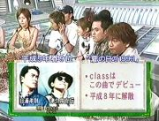
 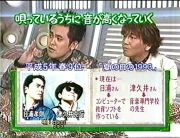
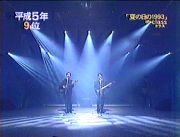
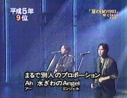
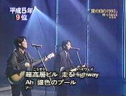
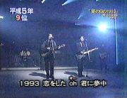
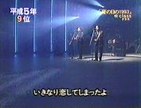
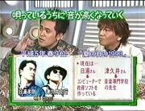
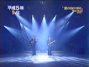
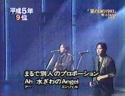
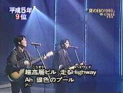
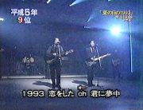
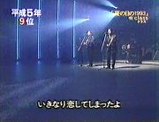